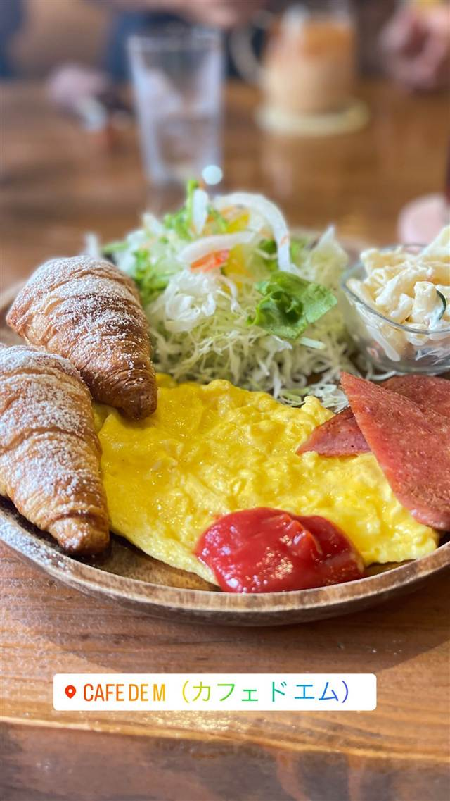

カフェ · カフェ · 西里
Cafe de M(カフェドエム)
フランス直輸入の生地を毎朝焼き上げるクロワッサン
CAFE DE M（カフェドエム）
宮古島・平良港近くにあるビーチスタイルの内装が特徴のカフェ。フランス直輸入の生地で毎朝焼くクロワッサンや、紅芋を使ったモーニングメニューが人気。
TRIVIA
豆知識
- クロワッサンの生地はフランスから直輸入したものを使用
REVIEWS
世間の評判
3.30食べログ
焼きたてクロワッサンと朝食の評判
- 焼きたてのクロワッサンを評価する声が多い
- 広々とした落ち着いた雰囲気を評価する人が多い
- 朝食の価格がやや高めだと感じる声がある
- 味は良いが際立った特徴はないという意見もある
食べログ 口コミ68件
| 看板 | モーニングプレート、紅芋トーストセット、クロワッサン |
|---|---|
| こだわり | クロワッサンはフランスから直輸入した生地を使い、毎朝店内で焼き上げている。 |
| どこから | 遠方 |
| 予算 | 昼 ¥1,000～¥1,999 夜 ¥1,000～¥1,999 |
| 定休日 | 水曜 |
| 場所 | 平良港徒歩5分 沖縄県宮古島市平良西里45-1 |
| メモ | 宮古島・平良港から徒歩5分。モーニングは7:00〜11:00、火曜定休。 |
食べたもの：モーニングプレート
NEARBY
近い店・同じ系統の店
-
 カフェ 中目黒
カフェ ファソン 中目黒本店（CAFÉ FAÇON）
コーヒーとの相性を考え抜いたバスクチーズケーキ
昼 ¥1,000～¥1,999 夜 ¥1,000～¥1,999
カフェ 中目黒
カフェ ファソン 中目黒本店（CAFÉ FAÇON）
コーヒーとの相性を考え抜いたバスクチーズケーキ
昼 ¥1,000～¥1,999 夜 ¥1,000～¥1,999
-
 カフェ 二子玉川駅
カフェ リゼッタ 二子玉川店（Cafe Lisette）
食べログ「カフェ百名店」に2年連続選ばれたプリンアラモード
昼 ¥1,000～¥1,999 夜 ¥1,000～¥1,999
カフェ 二子玉川駅
カフェ リゼッタ 二子玉川店（Cafe Lisette）
食べログ「カフェ百名店」に2年連続選ばれたプリンアラモード
昼 ¥1,000～¥1,999 夜 ¥1,000～¥1,999
-
 カフェ 恵比寿・代官山
カフェ アクイーユ 恵比寿店
全国パンケーキ人気店ランキングで1位に輝いたパティシエ仕込みの一枚
昼 ¥1,000～¥1,999 夜 ¥2,000～¥2,999
カフェ 恵比寿・代官山
カフェ アクイーユ 恵比寿店
全国パンケーキ人気店ランキングで1位に輝いたパティシエ仕込みの一枚
昼 ¥1,000～¥1,999 夜 ¥2,000～¥2,999
-
 カフェ 大手町駅
ザ パレス ラウンジ(The Palace Lounge)
輪島塗の名工赤木明登の漆器で提供する皇居のお濠を望むアフタヌーンティー
昼 ¥3,000～¥3,999 夜 ¥3,000～¥3,999
カフェ 大手町駅
ザ パレス ラウンジ(The Palace Lounge)
輪島塗の名工赤木明登の漆器で提供する皇居のお濠を望むアフタヌーンティー
昼 ¥3,000～¥3,999 夜 ¥3,000～¥3,999
-
 カフェ 表参道
カフェラントマン 青山店（CAFE LANDTMANN）
ウィーン本店と同じレシピで作る本格ザッハトルテ
昼 ¥1,000～¥1,999 夜 ¥3,000～¥3,999
カフェ 表参道
カフェラントマン 青山店（CAFE LANDTMANN）
ウィーン本店と同じレシピで作る本格ザッハトルテ
昼 ¥1,000～¥1,999 夜 ¥3,000～¥3,999
-
 カフェ 表参道駅
i2 cafe (アイツーカフェ)
フルーツサンド店の姉妹店が出す、オーブン焼きのダッチベイビー
昼 ¥2,000～¥2,999 夜 ¥2,000～¥2,999
カフェ 表参道駅
i2 cafe (アイツーカフェ)
フルーツサンド店の姉妹店が出す、オーブン焼きのダッチベイビー
昼 ¥2,000～¥2,999 夜 ¥2,000～¥2,999